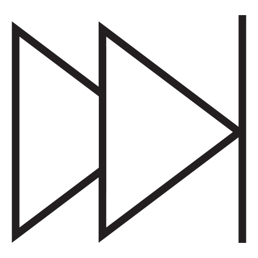
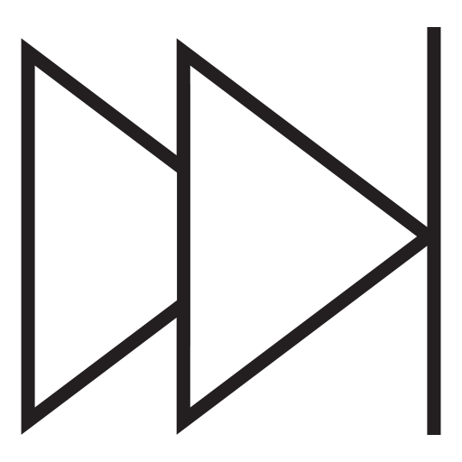
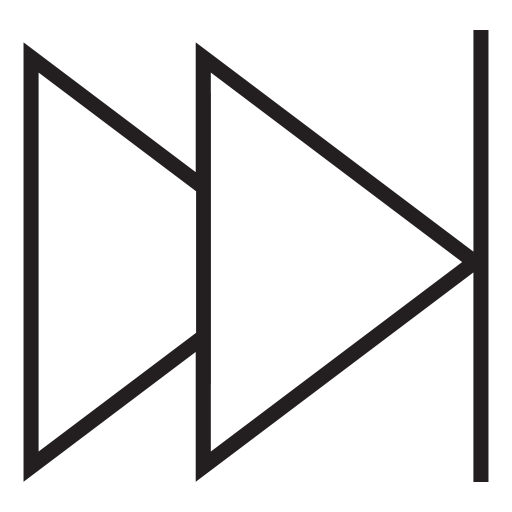

👇学习日志👇

19世纪上半叶，资本主义已经在欧洲几个主要国家迅速发展起来。资本主义大工业的发展和工厂制度的普遍建立，使资本主义社会的基本矛盾日益暴露出来，资产阶级与无产阶级的阶级矛盾异常尖锐。
经济上，工人受到资本家的残酷剥削；政治上，无产阶级处于无权的地位；社会生活方面，医疗、教育、卫生、住房等社会保障在当时尚未建立，极度贫困的无产阶级无法得到及时有效的救济，生活悲惨。这种残酷的剥削、压迫与极度困窘的生存状况必然激起无产阶级的强烈反抗与斗争。然而，由于当时无产阶级只凭朴素的阶级感情去反对资产阶级，又受到各种不科学思潮的影响，所以革命斗争一次又一次地遭到失败。
工人运动迫切需要科学的理论作为指导，来指明斗争的方式和前途。
英国古典经济学家亚当·斯密、大卫·李嘉图从经济角度分析了资本主义能够发展的源泉，黑格尔、费尔巴哈则更多地看到了世界的发展变化。
黑格尔认为发展和变化是符合事物运动发展规律的，因此他强调事物是不断运动发展的，这是从哲学的角度肯定了社会的发展变化。
英国和法国的社会主义思想家，三大空想社会主义者——圣西门、傅立叶、欧文，他们更多是从社会公平、社会公正的角度继承了传统欧洲的社会主义思想，通过大工业发展以后暴露出来的资本主义的矛盾和弊端，来阐释他们要求改变这种社会不合理现象的学说和想法。
黑格尔认为发展和变化是符合事物运动发展规律的，因此他强调事物是不断运动发展的，这是从哲学的角度肯定了社会的发展变化。
英国和法国的社会主义思想家，三大空想社会主义者——圣西门、傅立叶、欧文，他们更多是从社会公平、社会公正的角度继承了传统欧洲的社会主义思想，通过大工业发展以后暴露出来的资本主义的矛盾和弊端，来阐释他们要求改变这种社会不合理现象的学说和想法。
因此，当时各种学说的传播也为马克思主义的形成提供了丰富的思想来源。马克思主义是在马克思、恩格斯吸收前人成果的基础上，加上自身的努力、自身的创造形成的学说
1847年1月，同盟领导人委托约瑟夫·莫尔到布鲁塞尔和巴黎会见马克思和恩格斯，请求他们加入同盟，马克思、恩格斯同意加入并努力帮助改造正义者同盟。
1847年6月，正义者同盟在伦敦举行了第一次代表大会，恩格斯代表巴黎支部参加了大会的领导工作。
大会决定把正义者同盟改名为共产主义者同盟，决定出版《共产主义杂志》，用具有鲜明阶级性的新的战斗口号“全世界无产者，联合起来”取代“人人皆兄弟”的旧口号。
大会讨论并初步通过了由恩格斯和沃尔弗起草的同盟章程草案，讨论了恩格斯起草的同盟纲领《共产主义信条草案》，决定把它印发各支部征求意见。
由于是受托之作，需要照顾盟员的水平，又困于教义问答的形式，所以这个文件显得有些粗糙和不够成熟。
同盟各支部对信条草案进行了认真的讨论，在讨论过程中，“真正的”社会主义者赫斯向同盟巴黎区部委员会提出了一个反映“真正的社会主义”观点的修正草案。
这个修正草案受到了恩格斯的严厉批评。巴黎区部委员会便委托恩格斯起草新的纲领草案。1847年10月底11月初，恩格斯对信条草案加以修改补充，写成了《共产主义原理》。
《共产主义原理》虽然继续采用问答形式，但是比信条草案有了很大进步。
它共列举25个问题，内容上更加丰富，特别是对共产主义政党的纲领和策略原理的叙述更加完善，对无产阶级夺取政权以后向共产主义过渡所采取的革命措施的阐述也更加详尽。
恩格斯对《共产主义原理》并不满意，他在1847年11月23日致马克思的信中，认为最好是抛弃教义问答的形式而采用宣言的形式来起草党纲。1847年11月，同盟在伦敦召开第二次代表大会，马克思和恩格斯都参加了会议。
他们在会上批判了各种错误思想，阐述和捍卫了科学社会主义学说。大会经过辩论，接受了他们的观点，并委托他们为同盟起草一个准备公布的纲领。
马克思和恩格斯从1847年12月至1848年1月底用德文写成了《共产党宣言》。
《共产党宣言》中指出，“资产阶级不仅锻造了置自身于死地的武器； 它还产生了将要运用这种武器的人”，即现代产业工人。尽管马克思与恩格斯都多次阐述共产主义代替资本主义是客观的自然进程，但并没有把这一过程认为是纯粹的自然进化结果，而是人类自我斗争的结果。
资本主义社会中，推动历史进步的根本力量是现代产业工人阶级，因为工人阶级是社会先进生产力的代表 。
晚年恩格斯曾鲜明指出，“无产阶级要在决定关头强大到足以取得胜利，就必须组成一个不同于其他所有政党并与它们对立的特殊政党，一个自觉的阶级政党。”《共产党宣言》在系统论述无产阶级政党学说时，特别论述了以下几层含义：一是无产阶级政党的科学领导是共产主义远大目标能否实现的关键。
二是无产阶级政党只有坚持科学理论为指导才能制定出正确的方针、路线和政策，才能发挥先进性作用。三是组成无产阶级政党的成员必须是社会先进分子。
实践方面，这些成员立场必须坚定；理论方面，他们必须了解无产阶级运动的条件。
无产阶级政党的组织原则是民主制。五是无产阶级政党只有密切联系群众，才能了解群众需求，制定的政策才能维护好人民的权益，最终也才能得到群众的支持 。
《共产党宣言》指出，共产党人在当时的最近目标是“使无产阶级形成为阶级，推翻资产阶级的统治，由无产阶级夺取政权。”取得政权后，“无产阶级将利用自己的政治统治，一步一步地夺取资产阶级的全部资本，把一切生产工具集中在国家即组织成为统治阶级的无产阶级手里，并且尽可能快地增加生产力的总量。”
一是无产阶级掌握政权只是革命刚刚开始，掌握政权是革命的手段。
二是掌握政权的目标是为改造资本主义提供政权保障，为建设社会主义提供物质基础。
三是无产阶级夺取政权以及取得政权后进行各项建设需要经过长期艰苦努力。
四是由于各国发展情况的差异，无产阶级取得政权的道路也存在差异性，或通过和平过渡，或通过武装斗争取得政权，或即斗争也和平过渡。
今天终于把这个bgm切换功能搞出来了，幸好前面的模块兼容性够强，不用推翻，总体很顺利，本来一开始想用js数组的，但是效果没出来，最后看到csdn的大佬的方法，虽然也是数组，但是比我的更简洁一点，而且效果更好。
然后一口气塞了超级无敌多HOYO-MIX的歌，米卫兵出列！我觉得这个网页就快被我做成米哈游播放器了，要不过段时间再加个视频功能？
这个网站杀青了，有可能不更新了（应该不会吧），那我应该是去搞别的网站了，总感觉我像在写电子日记一样，像和自己对话，应该也不会有人一字一句看下来，十年后留给自己考古罢了。